"صُمِّم بشغف، ليُعاش للأبد." — من حساب إنستجرام شخصي بدون هوية لترميم الأثاث، لبراند أثاث فاخر بهوية بصرية كاملة وموقع إلكتروني حقيقي.

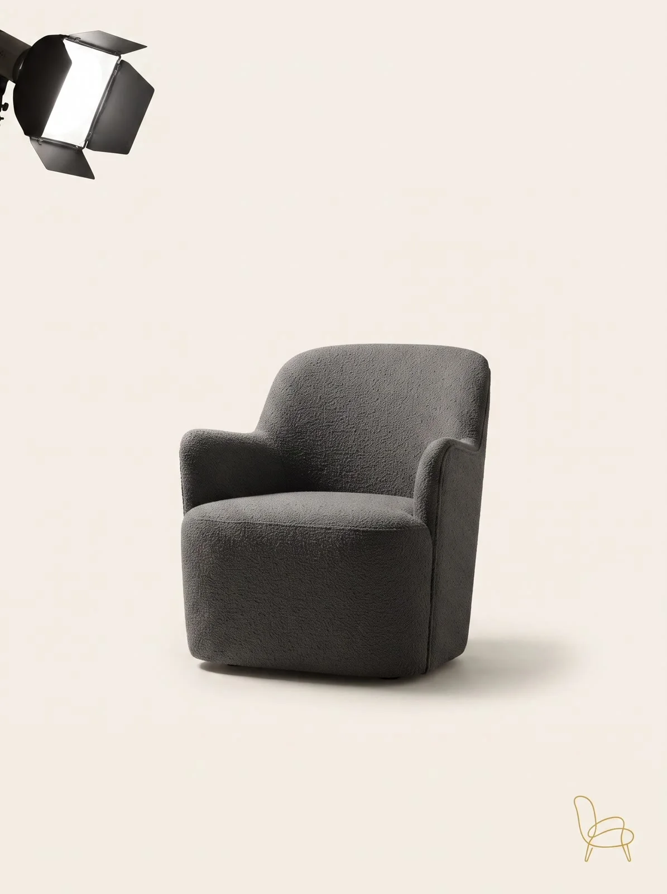
الشغل كان حقيقي فعلاً — ترميم وتصنيع أثاث بإيد محترفة — لكن كان شغال من حساب إنستجرام شخصي ("salma_farag99") بفييد مبعثر، من غير لوجو، من غير ألوان ثابتة، ومن غير موقع إلكتروني. أي عميل بيشوف الحساب مكانش يقدر يميّز إن ده شغل حرفي فاخر يستاهل الثقة، مش بائع عشوائي.
 02 — الهوية البصرية
02 — الهوية البصرية
اللوجو عبارة عن خط واحد متصل بيرسم شكل كرسي بذراعين بلون دهبي دافئ — إشارة هادية لصناعة الأثاث نفسها. لوحة الألوان بتجمع بين الأسود الفحمي الغامق والدهبي الدافئ والكريمي الناعم، عشان البراند يحس إنه فاخر وخالد زي بوتيك، مش براند تجاري عادي.
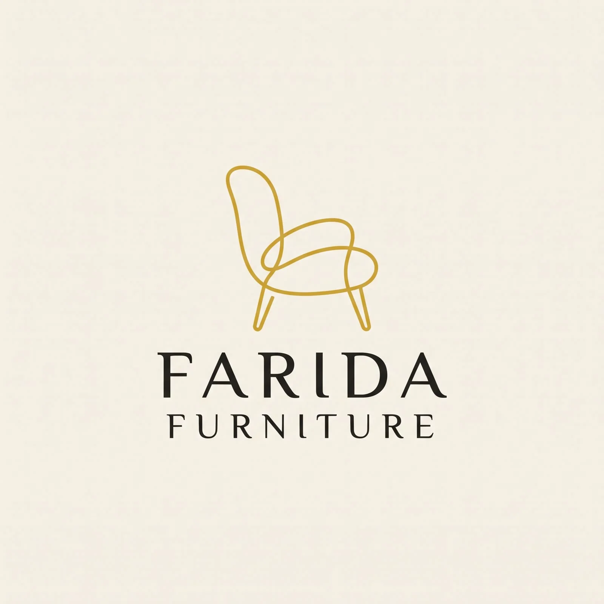
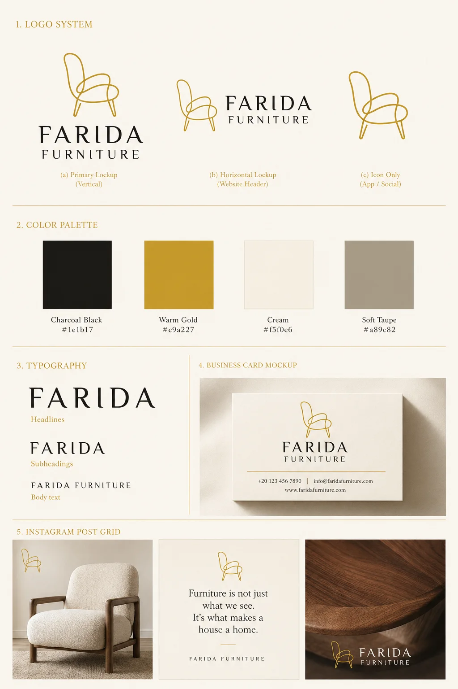
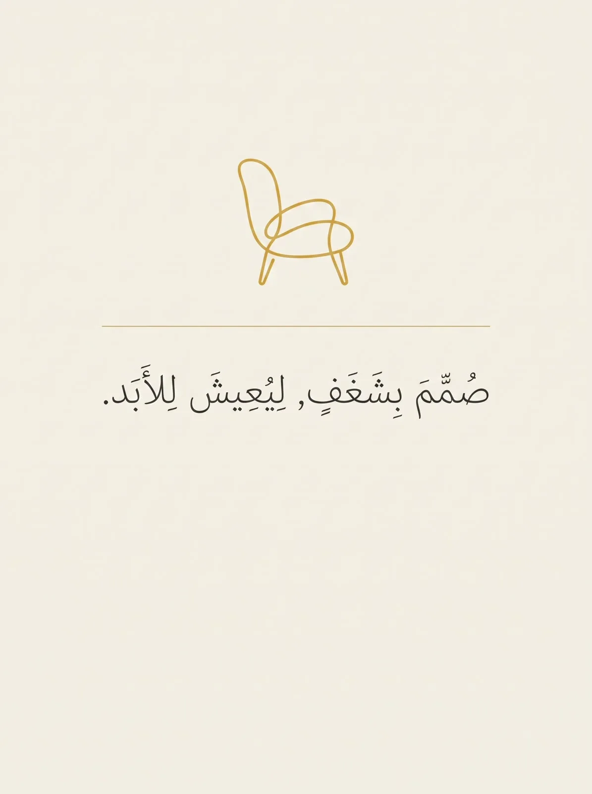
موقع إلكتروني كامل وجاهز للتجارة الإلكترونية — صفحة رئيسية، صفحة تشكيلات (غرف نوم، معيشة، طعام)، صفحة "من نحن" بتحكي قصة الحرفية، صفحة تفاصيل منتج، ونموذج حجز/تواصل — كل ده متجاوب بالكامل على الموبايل.
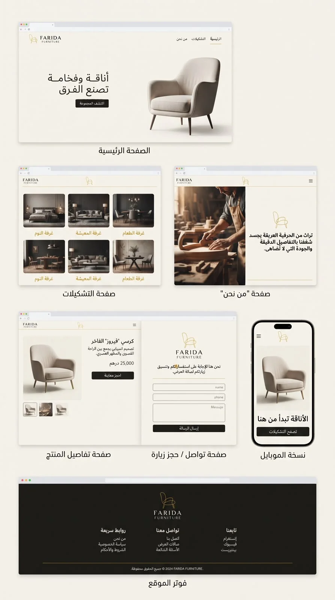
 04 — المحتوى والتصوير
04 — المحتوى والتصوير
كل صورة منتج بتتبع نفس قواعد الإضاءة والخلفية، وكل صورة تقريب (Macro) للخامة بتثبت جودة المواد عن قرب — ده اللي بيحول صورة الأثاث من مجرد صورة لسبب تخلي العميل يثق في البراند.
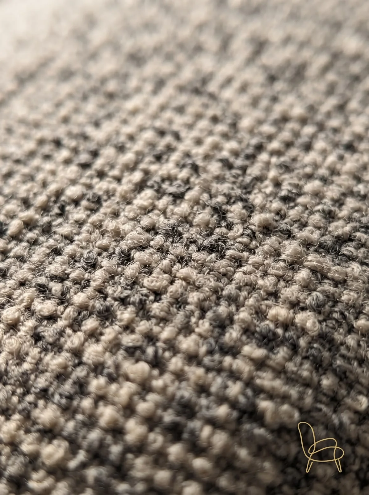
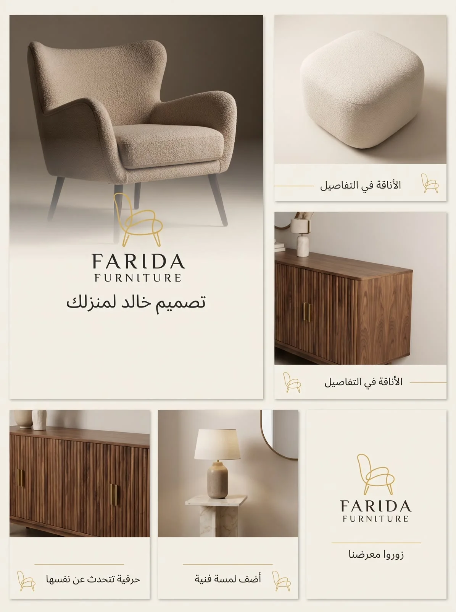
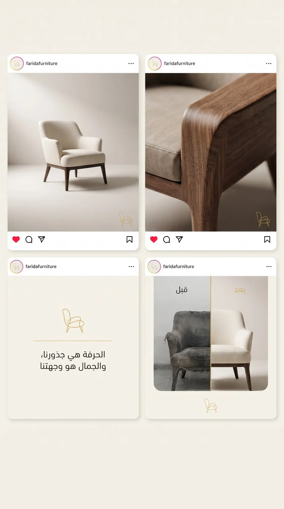
دي مش صور تخيلية — ده حساب العميل الحقيقي قبل، مقابل النتيجة الحقيقية بعد. ونفس الكلام على الموقع: من غير أي حضور رقمي غير السوشيال ميديا، لموقع تجارة إلكترونية كامل.
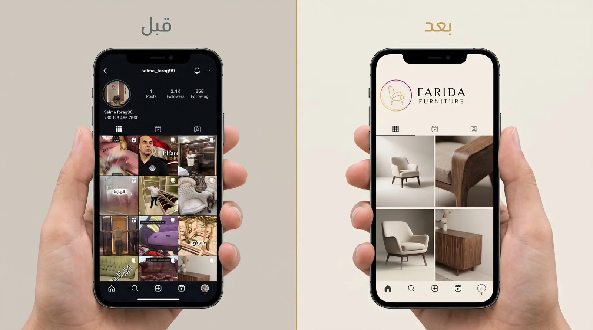
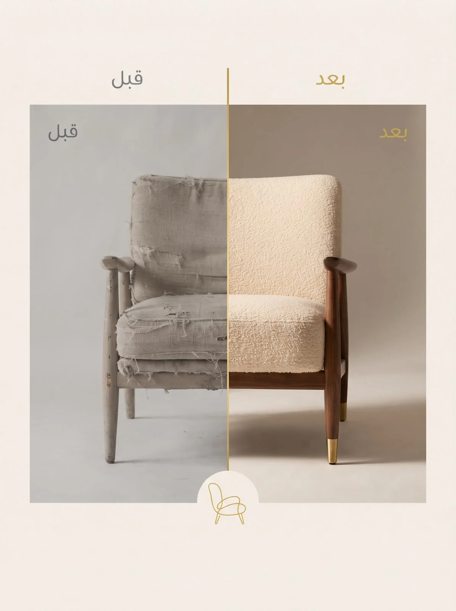
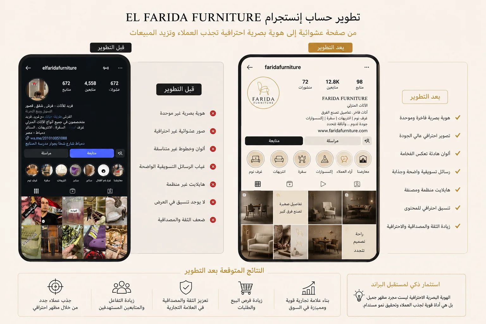
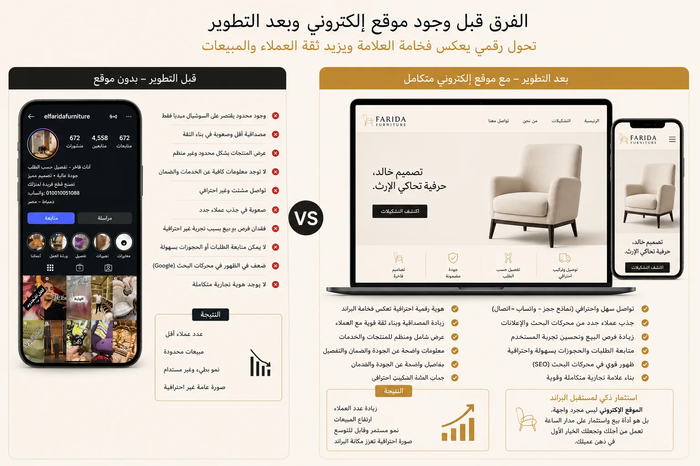
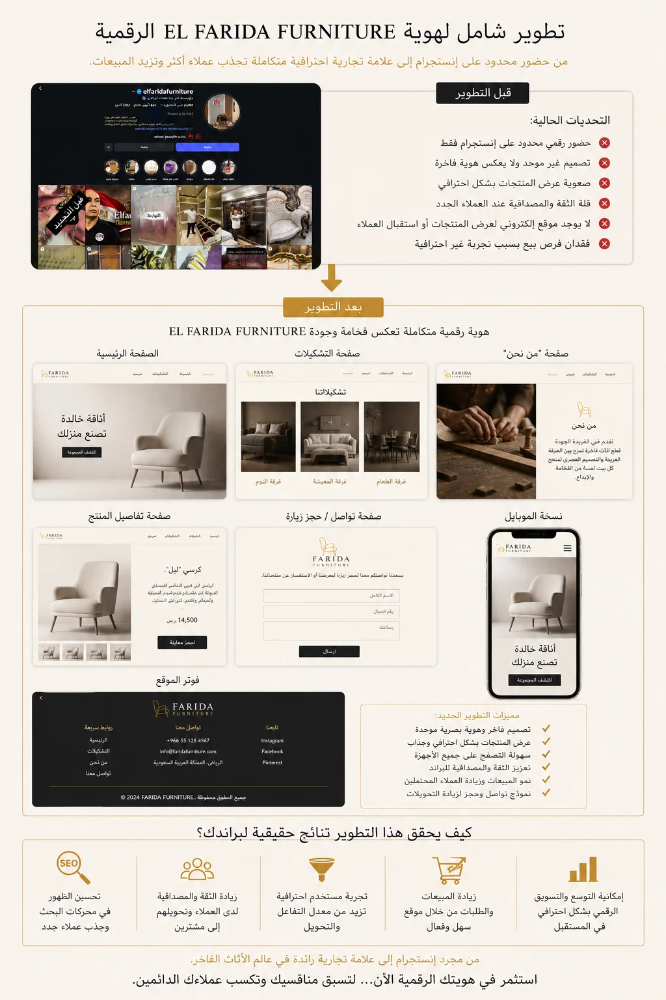
 06 — قبل وبعد
06 — قبل وبعد